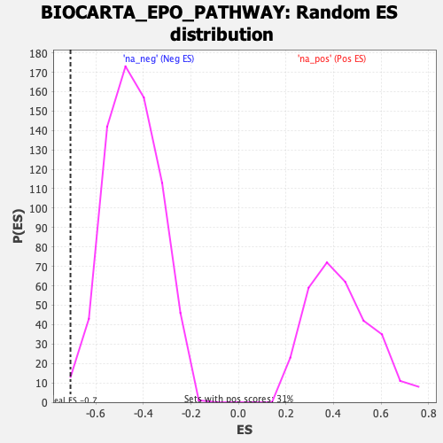

| | | Dataset | DE_genes |
| Phenotype | NoPhenotypeAvailable |
| Upregulated in class | na_neg |
| GeneSet | BIOCARTA_EPO_PATHWAY |
| Enrichment Score (ES) | -0.70733863 |
| Normalized Enrichment Score (NES) | -1.580075 |
| Nominal p-value | 0.0058139535 |
| FDR q-value | 0.08824186 |
| FWER p-Value | 0.604 |
Table: GSEA Results Summary
 Fig 1: Enrichment plot: BIOCARTA_EPO_PATHWAY
Fig 1: Enrichment plot: BIOCARTA_EPO_PATHWAY
Profile of the Running ES Score & Positions of GeneSet Members on the Rank Ordered List
| PROBE | GENE SYMBOL | GENE_TITLE | RANK IN GENE LIST | RANK METRIC SCORE | RUNNING ES | CORE ENRICHMENT | | 1 | PTPN6 | | | 846 | 1.047 | -0.0208 | No |
| 2 | JAK2 | | | 1017 | 0.832 | -0.0049 | No |
| 3 | CSNK2A1 | | | 2162 | 0.277 | -0.0699 | No |
| 4 | GRB2 | | | 5659 | -0.018 | -0.2955 | No |
| 5 | STAT5B | | | 8787 | -0.284 | -0.4887 | No |
| 6 | MAP2K1 | | | 9255 | -0.342 | -0.5078 | No |
| 7 | HRAS | | | 9295 | -0.347 | -0.4991 | No |
| 8 | SHC1 | | | 10277 | -0.488 | -0.5468 | No |
| 9 | EPOR | | | 12189 | -0.853 | -0.6428 | No |
| 10 | MAPK3 | | | 12945 | -1.060 | -0.6573 | Yes |
| 11 | ELK1 | | | 13022 | -1.083 | -0.6272 | Yes |
| 12 | MAPK8 | | | 14262 | -1.636 | -0.6543 | Yes |
| 13 | SOS1 | | | 14542 | -1.821 | -0.6134 | Yes |
| 14 | STAT5A | | | 14602 | -1.876 | -0.5564 | Yes |
| 15 | PLCG1 | | | 14799 | -2.062 | -0.5023 | Yes |
| 16 | RAF1 | | | 15370 | -3.364 | -0.4302 | Yes |
| 17 | JUN | | | 15456 | -4.705 | -0.2833 | Yes |
| 18 | FOS | | | 15471 | -8.771 | 0.0000 | Yes |
Table: GSEA details [plain text format]

Fig 2: BIOCARTA_EPO_PATHWAY: Random ES distribution
Gene set null distribution of ES for BIOCARTA_EPO_PATHWAY